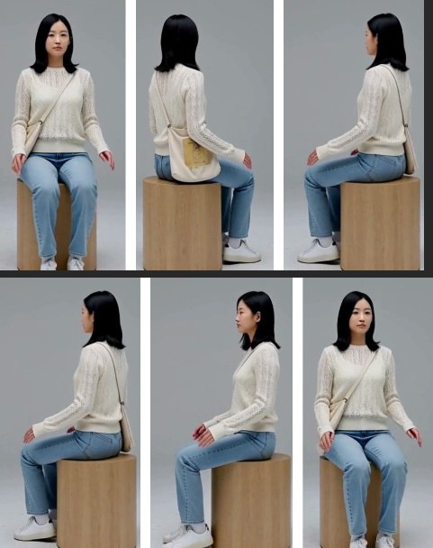
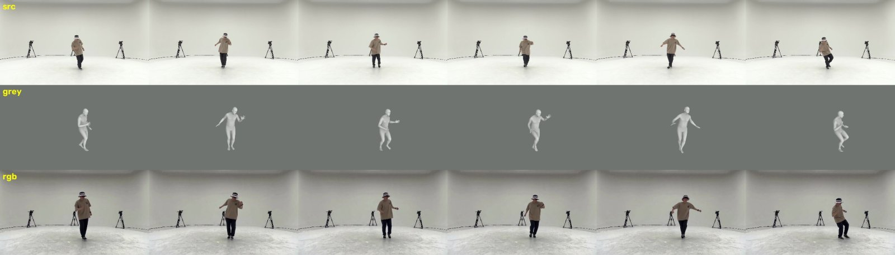
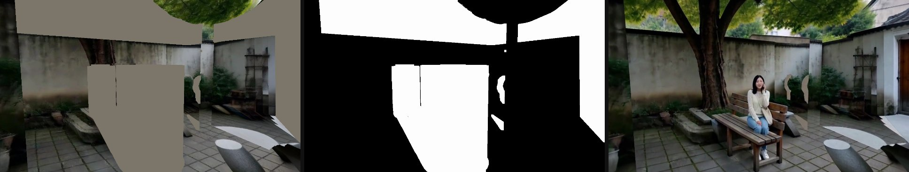

一镜到底：从一段剧本到分钟级、带对白的连续镜头
现在的状态
- 合并完成（10-27）：搭档的动作参考预处理已接进我们的流水线。后院跳舞 M1 是第一条所有模块都在用、从头跑到尾的结果：跳舞明显比不给参考时像，没有带上原舞者的长相。第 2 段有场景记忆带来的瑕疵，正在修。每一步的输入、控制和常见问题见下一节。
- 最长的结果：F2，书店一镜到底，55 秒、4 个 H3 窗口串成一条不切的镜头，带对白和环境声。空间已验证正确：店门、过道、书架、工作间、后院和回看后门，都和白模的位置、朝向、遮挡一致。
- 人物朝向（未解决）：深度表达不了人面朝哪边（SMPL 正面和背面的轮廓一样）。10-27 试过：prompt 写朝向、姿态控制、搭档的灰模参考视频。要么修好一个人、另一个人被画错，要么画面坏掉，要么显存不够。剩下两条路：按人分区域绑定，或在规划阶段避开难拍的站位。
- 对比实验：6 个开源基线的权重已全部下载到 NPU 机器（238 GB），包括 LTX-2.3、HY-WorldPlay、Wan2.2 VACE，以及同底模的 RAVEN 自回归 H3；还没做冒烟测试。MosaiChunk 的代码已拉取，需要移植到 NPU。
- 记忆库 v2：人物记忆新版已接入生成（4 方向 × 全身/近景，每格最多 2 张，留和描述最像的，要说话的人带正脸）。场景记忆实测“8 个去噪步都开”最好（只开前几步或后几步，接缝和回看都更差）。动作记忆已实现，还没在生成里验证。
- 下一步重点：①场景记忆入库前加几何检查（同一位置从不同角度看颜色要一致），修掉 M1 第 2 段的白块和双长椅；②书店全模块版 I1 正在跑后两段，跑完和 F2 对比；③人物朝向。
合并后的完整流程：后院跳舞（M1，25 秒一镜到底）
这是我和搭档的部分合并后，第一条所有模块都在用、从头跑到尾的结果：Planner 和白模、搭档的动作参考预处理、人物记忆（开拍前试镜 + 4×2 视角库）、场景记忆、音色记忆、人数检查。
输入：三句话的剧本 + 一段参考舞蹈视频（AIST 舞蹈库 aist_dance_1 的 1–5 秒）。剧情：清晨，小雨从书店后门走进后院，在院子中间开心地跳一小段街舞，喊“太好了，我考上了！”，走到大树下的长椅坐下，给妈妈打电话“妈，我考上了，录取通知刚到！”。镜头最后回身，看向后门和她跳舞的地方。
每一步：输入什么、送进哪里、怎么控制
| 步骤 | 输入 | 送进哪里 | 控制（怎么管、管哪几步） | 输出 |
|---|---|---|---|---|
| ① 剧本 → 规划 | 中文剧本（3 句话）；参考舞蹈视频 | 写成两个规划文件：scene.json（院子布局：后门、窗、大树、长椅、石桌石凳、盆栽、院墙）和 clips.json（小雨每一刻在哪、面朝哪、何时坐下；“5.0–9.0 秒在原地跳参考视频的 1–5 秒”；相机分 5 段的轨迹）。然后送校验器做射线检查。 |
校验器检查：相机穿墙、镜头前被挡、被拍的人被挡、人撞家具、速度突变。有错就改，直到 0 错误。 | 25 秒（601 帧，24 fps）的一镜到底计划 |
| ② 参考舞蹈 → 3D 动作 | 参考舞蹈视频 | GVHMR（从普通视频估计 3D 人体姿态），再换算到场景坐标 | — | 每帧的 SMPL 人体姿态，挂到小雨 5.0–9.0 秒的位置上，在规划的地方原地跳 |
| ③ Blender 渲染白模 | ①的规划 + ②的动作 | Blender，沿相机轨迹逐帧渲染 | — | a. 深度控制视频：白模的深度，人用一个方块人偶表示，跟着 SMPL 的重心和身高走，只表示“人在哪、多高”。编码和 ControlNet 训练时一样：每帧按 2%–85% 分位拉伸，近白远黑，天空涂黑。 b. 灰模动作视频：小雨的 SMPL 灰色人体，用同一条相机轨迹拍，灰底。 c. 每帧的相机参数和精确深度，给记忆库和人数检查用。 d. 切窗：w00 = 第 0–361 帧，w01 = 第 341–600 帧，重叠 21 帧。 |
| ④ 动作参考预处理 搭档的方法，原样调用 |
<Video 1>：原舞蹈视频 1.00–5.04 秒（去掉音轨）<Video 2>：③b 灰模视频里跳舞的那段（镜头第 120–216 帧，补到 124 帧，最后一帧定住）文字：搭档的六段式 prompt，只把相机那句改成我们的机位 |
H3 参考版（Ref2VA，任务 ref2av，不接 ControlNet），入口是搭档的 infer_h3_step_attention.py |
分步注意力（S09）：第 1–4 步只许看 <Video 2>（灰模：机位、构图、姿势），第 5–8 步只许看 <Video 1>（原视频：自然的动态、节奏、重心）。用搭档的配置：8 步加速 LoRA，4 卡序列并行，seed 43。 |
原舞者在我们这个镜头的机位下跳同一段舞（RGB，124 帧，静音）。约 19 分钟。 |
| ⑤ 开拍前试镜 （之前已做好，本例复用） |
小雨的文字描述 | H3（深度控制 + 文字）：灰色影棚里，人站着或坐在转凳上，原地转一圈，175 帧 | 转台的深度视频，所以每帧的朝向是已知的 | SAM3 抠出人像，按朝向存进小雨的 4×2 格（前/左/后/右 × 全身/近景）。每格最多 2 张，留和文字描述最像的（CLIP 打分）。 |
| ⑥ 生成第 1 段 w00，0–15 秒 |
· 深度控制视频（③a） · <Picture 1> 小雨参考图：按 w00 的相机轨迹，算出她 65% 时间正面、22% 右侧、12% 左侧出镜，从库里选 3 张拼成一张；她这段要说话，所以一定带正脸· <Video 1> ④的动作参考· 文字 prompt（六段式） · 没有场景记忆，也没有参考音频（第一段） |
H3 参考版（任务 ref2av_control）：深度进 ControlNet-Union-2.0；参考图、参考视频进 H3 的参考输入（REF_IMAGE、REF_VIDEO）；文字进 prompt |
深度：强度 1.0，8 步都起作用。动作参考：8 步都可读。prompt 由程序自动填：人物定义；“<Video 1> 只取动作和节奏，不要表演者的外观和房间”；台词“At 00:09.600 … 太好了，我考上了！”。采样：8 步加速 LoRA，不用 CFG，seed 43，1344×768，362 帧，4 张昇腾 910B2 张量并行。 检查：YOLO 数人，和规划里该看到的人数比；不合格换 seed 44、45 重跑，取最好的。 |
15 秒视频 + 声音。62 个检查帧，0 帧多人、0 帧少人，一次通过。约 20 分钟。 |
| ⑦ 第 1 段入库 | 第 1 段的成片 | 三个记忆库 | 人物：SAM3 抠人；按 3D 规划认人（“这个位置上的就是小雨”，不靠看脸）；DINOv2 检查还像不像她，像才入格。 音色：whisper 对齐剧本。 场景：每帧画面和精确深度、相机一起存成关键帧。 |
人物：36 张都通过（0 张可疑），库里现在 8 张，占 4/8 格。 音色：在 9.0–10.85 秒听到“太好了我考上了”，截成小雨的音色片段。 场景：62 个关键帧。 |
| ⑧ 生成第 2 段 w01，14.2–25 秒 |
· 深度控制视频 · 场景记忆：w00 拍到的墙、地面、门，按精确深度投影到 w01 的每一帧，得到“记忆画面 + 掩码”。黑 = 沿用，白 = 重画；人所在的区域一律挖掉，交给模型。和上一段重叠的 21 帧整帧沿用。 · <Picture 1>：w01 里她 94% 时间从左侧出镜，所以选 2 张左侧 + 1 张正脸· <Audio 1>：⑦截的音色片段· 没有动作参考（这段不跳舞） |
同⑥。另外：记忆画面和掩码进 ControlNet 的 inpaint 通道，跟深度拼在同一路里；音频进 H3 的参考音频（REF_AUDIO） |
记忆：8 步都起作用。这一段平均 83% 的可见表面在 w00 见过，69% 的像素沿用记忆。 prompt 写“用 <Audio 1> 的音色说：妈，我考上了，录取通知刚到！”。采样和检查同⑥。 |
10.8 秒视频 + 声音。45 个检查帧，0 帧多人、0 帧少人，一次通过。约 20 分钟。 台词：whisper 听到“妈我考上了力气通知刚到”（“录取”说得不清），2.6 秒开口（计划 3.8 秒）。和第 1 段那句的音色相似度 0.84（resemblyzer；M0 是 0.76；以前测的不同人之间约 0.55）。 |
| ⑨ 拼接 | 两段视频 | ffmpeg | 去掉 w01 的前 21 帧（和 w00 重叠），画面直接接上；声音在接缝处交叉淡化 0.2 秒 | 601 帧，25 秒 |
中间产物



别人可能会问
问：白模（深度）到底管什么？
只管几何：墙、门、家具在哪、多远，人站在哪、多大。颜色、材质、光线、人的长相、动作细节都不管。强度 1.0，8 个去噪步都起作用。
问：为什么深度里的人是方块，不是 SMPL 人体？
这是搭档的设计：动作只由动作参考视频给，深度里的人只占位置和身高，避免两路控制打架。另外实测发现，SMPL 深度里人的正面和背面轮廓几乎一样，本来就表达不了人面朝哪边。
问：“分步注意力”是什么？要训练吗？
不训练，也不改模型权重。H3 的参考视频经 VAE 编码后，生成视频在注意力里可以“读”它。搭档的入口脚本在每个去噪步决定能不能读某个参考视频（1 = 能读，0 = 屏蔽），DiT 和 ControlNet 里都屏蔽。注意：屏蔽的只是这条注意力通路，H3 的多模态文字编码器（Qwen3-VL）还是能看到参考内容。
问：为什么先看灰模、后看原视频（S09）？
前几步决定画面的布局、机位和姿势，所以先只看从我们机位拍的灰模；后几步决定细节和运动质感，所以再看真人原视频，把灰模的僵硬变成自然的动态。搭档设计了 S01–S14 多种开关方式（实际跑了 11 种），我们用的是其中的 S09：第 4 步后切换。
问：为什么不把原舞蹈视频直接给主生成？
原视频是摄影棚正面全身、固定机位，和我们镜头的机位、远近都不一样，H3 会把机位也一起照抄。预处理先把这段舞“重拍”到我们的机位上，主生成就只需要照着跳。
问：原舞者的长相会不会带过来？
预处理的输出仍然是原舞者（帽子、卡其 T 恤、摄影棚），这是设计如此。主生成时 prompt 写明“<Video 1> 只取动作和节奏，表演者的外观和房间不保留”，同时给小雨的人物参考图。逐帧看过：M1 里没有帽子、T 恤，也没有摄影棚。
问：场景记忆是把像素直接贴上去吗？
不是。记忆画面和掩码经 VAE 编码后，跟深度拼成同一路送进 ControlNet-Union-2.0 的 inpaint 通道（每个位置：深度特征 96 维 | 掩码 4 维 | 记忆画面特征 96 维）。模型会参考它，但最后的像素仍是模型自己画的。
问：记忆为什么 8 步都开？你原来的想法是“前 4 步只看白模、后 4 步看全部”。
10-27 在书店第 4 段实测过：8 步都开，接缝 25.0 dB，回看误差 10.6；只开前 4 步，19.5 dB / 21.9；只开前 2 步，15.7 dB / 31.4；只开后 4 步更差，会出现贴片和多出来的人。所以 8 步都开。
问：人物参考图怎么选？
每个人一个库，按“相机看他的方向（前/左/后/右）× 远近（全身/近景）”分 8 格，每格最多 2 张，留和文字描述最像的；后来的更像，就替换旧的。入库靠 3D 规划认人，不靠看脸；DINOv2 只用来筛“还像不像本人”。下一段要用时，按它的相机轨迹算出这个人会以哪些方向、远近出镜，挑最匹配的 2–3 张拼成一张图。要说话的人一定带正脸。
问：音色怎么保持一致？
每段生成后，用 whisper 把声音和剧本台词对齐，截下每个人说的第一句。后面的段落把这句作为参考音频，prompt 里写“用 <Audio 1> 的音色说……”。
问：怎么保证人数不出错？
每段生成后，YOLO 数画面里有几个人，和规划里此刻应该看得见的人数比。多人或少人的帧超过阈值，就换 seed 重跑（43 → 44 → 45），取最好的。
问：算力和时间？
4 张昇腾 910B2。动作参考预处理约 19 分钟（124 帧），每个 15 秒窗口约 20 分钟（含加载模型），加上入库和检查几分钟。这条 25 秒的成片总共约 1 小时。
问：哪些还靠人工？
这条测试的规划是手写的（场景复用书店后院），没有走 LLM 规划。每段 prompt 的主体是手写模板，人物、动作、音色的参考编号和描述由程序自动填。参考舞蹈已提前用 GVHMR 转成 SMPL。
问：和搭档原来的设计比，改了什么？
他的入口脚本、配置、S09 开关、prompt 都原样使用，他的文件一个没改；只把 prompt 里相机那一句换成我们这个镜头的。我们加的是：自动从规划里找出“这一段里谁在什么时候做参考动作”，截出对应的灰模和原视频片段（不足 124 帧就补齐），把结果作为 <Video 1> 接进主生成，并自动写好 prompt。
- 场景记忆会把“第 1 段没按白模画的东西”投到错的表面上。记忆是按白模的几何投影的，第 1 段画的东西如果和白模对不上，就会落到别的表面上，而且会被原样沿用：
- 石桌画大了，多出来的桌面落到地上，成了白块。
- 长椅：白模里是带靠背的长椅，第 1 段画成了一条没靠背的长石凳；第 2 段过了重叠帧以后，按白模又画出一条带靠背的木椅，旧石凳还从记忆里留着。结果出现两条长椅，15 秒处能看出跳变。
- 舞蹈幅度比原舞者小。主生成里动作参考 8 步都开，还没试“只在部分步开”。
- 预处理慢：每段约 19 分钟，因为搭档的配置开了 CPU offload。
- 这是单人场景。两个人同时有参考动作还没测；两人场景里人的朝向问题仍未解决（见“现在的问题”）。
任务
输入 → 输出
- 输入：一段剧本，粗糙的也可以，由规划器补全。可选：参考动作视频、人物照片、参考声音。本例只有剧本。
- 输出：分钟级、单条连续镜头（一镜到底，中间不剪辑）、带对白和环境声的写实视频。相机可以在一个完整的 3D 空间里穿门过廊，并回到之前去过的地方。
难在哪里
- 视频模型一次最多生成约 15 秒，分钟级只能分窗口生成，窗口之间要无缝。
- 相机回到老地方时，墙、书架、人物、声音都要和之前一致（“记忆”）。
- 空间和物理要合理：相机不穿墙，人不穿家具，人数和身份不能乱。
- 动作要符合剧本或参考动作，又不能僵。
方法图（当前版本）
模块说明
Planner 已实现
- LLM（Claude）根据剧本生成 scene.json（房间、门窗、家具的布局）和 clips.json（每个 clip 中人物的路线、动作、朝向，以及 camera trajectory）。
- Validator 在白模中做射线检查：camera 穿墙、镜头近处遮挡、被拍人物被挡、人物身体碰撞、速度突变；不合格的条目返回 LLM 修改，直到全部通过。
- Blender 沿 camera trajectory 渲染白模，得到每帧的 metric depth（转成 ControlNet 格式）、camera 参数，以及每个人物的位置和 subject orientation；人物在 depth 中用占位人偶（box）表示，整条镜头按 15 s 切成窗口。
Motion-reference preprocessing 已实现，已接入（10-27）
- 在 Planner 生成每个 clip 的 camera trajectory 后，对包含 reference 的 clip，截取对应时间段的 camera trajectory 和 subject orientation，用这条 camera trajectory 拍摄 GVHMR 给出的 3D SMPL motion，得到灰模动作视频。
- 将灰模动作视频给到 H3，以 Timestep-Aware Gated Attention 的方式让模型在早期去噪步看姿态、后期补细节动态，生成动作自然、且符合目标 clip 中人与 camera 相对关系的 RGB 参考视频。主生成时该 clip 全程只给 box depth，动作由这段参考视频提供。
Scene memory（场景记忆） v2 设计中
- 每个窗口生成后，利用该窗口的 camera trajectory 和白模的 metric depth，把生成帧中的场景像素投影回白模表面；每个表面位置只保留最清晰的一次观测（距离近、视线正对、无模糊、没有人物遮挡），从记忆中沿用的像素不再写回。
- 生成下一个窗口时，沿它的 camera trajectory 渲染已记录的白模表面，得到记忆画面：从相近角度观测过的区域直接沿用；只从差异较大的角度观测过的区域，以 Timestep-Aware 的方式只在早期去噪步参考（定颜色和布局，细节由模型生成）；没观测过的区域由模型自由生成；人物区域不记录也不沿用。
- Planner 中的剧情事件（开门、取书、开灯）发生后，对应区域的记忆失效。
Character memory（人物记忆） 已接入（10-27）
- 开拍前用 H3 为每个角色生成一段原地转身一周的 casting 视频，每帧的 orientation 已知，预先填满该角色的视角格。
- 每个窗口生成后，依据 Planner 中人物位置与 camera 的相对关系，把检测到的人绑定到对应角色；用 SAM3 分割出人物（含随身物品），按相对 camera 的 orientation（前 / 左 / 后 / 右）和距离（全身 / 近景）存入 4 × 2 的视角格；DINOv2 只用来检查这个人是否仍与该角色一致，不一致的不入库。
- 生成下一个窗口时，根据它的 camera trajectory 计算每个角色会以哪些 orientation 和距离出现，取最匹配的 2–3 张拼成一张参考图，作为 REF_IMAGE 给到 H3。
Motion memory（动作记忆） 已实现，待验证
- Planner 中已规定每个人物在各时间段的动作（走路、坐下、站立）。某段动作第一次生成得满意后（例如第一个 clip 中的瘸腿走路），按 Planner 给出的时间段截取这段视频，连同它相对 camera 的 orientation，存入该人物的动作记忆。
- 之后的 clip 中，Planner 规定该人物再次做同一动作时，取 orientation 最接近的片段作为 REF_VIDEO 给到 H3，使人物在每个 clip 中保持同样的动作风格。
Voice memory（音色记忆） F2 已用
- 每个窗口生成后，用 whisper 将生成音频与剧本台词对齐，截取每个角色说的第一句，存入音色记忆。
- 之后的窗口将这句作为 REF_AUDIO 给到 H3，并在 prompt 中用
<Audio N>绑定说话人。
给 H3 的输入（每个 15 秒窗口）


| 输入 | 内容 | 格式 / 参数 |
|---|---|---|
| 底模与任务 | w00：H3 基础版，任务 v2av_control（深度 + 文字）；w01 起：H3 参考版（transformer_ref），任务 ref2av_control，可以吃参考图、音频、视频 | MiniMax-H3，音视频联合生成；我们给参考版补接了 inpaint 通道（原本只有基础版有） |
| ① 控制视频 | 深度，人物为占位人偶（或 SMPL） | Fun-ControlNet-Union-2.0，强度 1.0，作用于全部去噪步。支持多路融合，写法 路径=强度@起:止#区域掩码，例如 SMPL 深度 @0:0.375（只在前 3 步）+ 占位深度 @0.375:1 |
| ②③ 场景记忆 | 保留像素视频 + 掩码（黑 = 保留，白 = 生成）；被遮处填 ImageNet 均值灰 | 挂在第一路深度控制上。F2 里非重叠帧平均有 w01 9%、w02 约 0%（走廊和后院之前没见过）、w03 13%（最多 62%）的像素来自记忆；重叠帧 100% |
| ④ 参考图 <Picture N> | 每人一张两视角设定图（CLIP 核验身份） | REF_IMAGE；同一人只给一张，避免被画成两个人 |
| ⑤ 参考音频 <Audio N> | 每人第一句台词的音频（whisper 词级对齐切出） | REF_AUDIO，在 prompt 里写成“某人的音色参考” |
| 参考视频 <Video N>（可选） | 动作参考：搭档的预处理输出，即原动作从目标相机“重拍”后的 RGB 视频（见合并后的完整流程④） | REF_VIDEO，必须去掉音轨，否则也会被当成音频参考；多人加人物图时灰模外观会泄露 |
| ⑥ 文字 prompt | w00 用“镜头描述 + 声音”格式；w01 起用 Ref2VA 六段式：subject_definitions / summary / retention_analysis / detailed_description / overall_soundscape / non_diegetic_music | 台词写法 (S1) … says: <d>[Chinese] …</d>，时间点写 At 00:12.900,。目前按剧本手写模板，记忆库自动填入参考编号和音色描述 |
| 采样 | 8 步加速 LoRA（基础版 fl2v、参考版 ref2v 各自的 turbo 8-step），shift 6/3 与 12/3，seed 43 | 1344×768，24 fps，362 帧（17n+5，约 15 s）；4 张昇腾 910B2 张量并行，每窗口约 10–15 分钟 |
F2 w03 自动填好的 prompt（节选）
subject_definitions: <Subject 1> is Yu in <Picture 1> (2 views of the same single person, side by side), a young woman in her early twenties with shoulder-length black hair, a cream knit sweater, light-blue jeans, white sneakers and a canvas tote bag on her shoulder, with the exact face, hair, build and clothes as seen in <Picture 1>. <Subject 2> is Old Zhou in <Picture 2> (2 views of the same single person, side by side), the shop owner, a man in his sixties with short grey hair and round reading glasses, a dark brown cardigan over a white shirt and grey trousers, … <Audio 1> is the voice-timbre reference for <Subject 2> (S1). <Audio 2> is the voice-timbre reference for <Subject 1> (S2). summary: [reference generation + audio reference] One unbroken eye-level shot circling a wooden bench in the small back yard of an old bookshop, where <Subject 2> gives <Subject 1> a mended old book and she thanks him; … detailed_description: … At 00:02.800, <Subject 2> (S1) hands <Subject 1> the book and, using the warm, slightly husky old man's voice timbre referenced from <Audio 1>, says: <d>[Chinese] 这本书我修好了，送给你。</d> At 00:06.000, <Subject 1> (S2) smiles and, using the clear, light young woman's voice timbre referenced from <Audio 2>, says: <d>[Chinese] 谢谢周叔！</d> They are the only 2 people; no text or lettered signs appear.
最长的结果：F2（书店一镜到底，55 秒，两个人）

空间对不对：白模（上）vs 成片（下），同一时刻


refmotion 探索：车库双截棍（多镜头案例）
流程：
- 规划器判断“双截棍”是复杂器械动作，文字生成不可靠，需要找参考视频。
search_ref用中文关键词搜 B 站，Claude 看帧打分：单人、静止机位、全身入镜、动作匹配。- 选中教学片段 BV1zukGYCE83 的 52–63 s（得分 6/10）。
- GVHMR 提取 SMPL-X，刚性对齐放进车库白模的空车位中央。
- 按镜头渲染深度、骨架、人物掩码，交给 H3。


11 个版本（每张上半为第 100 帧看布局，下半为第 240 帧看结尾特写和双截棍）

动作无

动作弱

布局/道具差

布局差

布局差

动作弱

旧编码最佳

道具中

当时最佳

动作好

单人带道具推荐
结论
- 深度编码决定人能不能被看见：旧的固定对数编码里，人和背景只差 13–83 级灰；换成 ControlNet 训练格式后差 70–230 级。只给深度（C′）就能同时拿到布局、动作、推镜和道具。
- 骨架是双刃剑：动作最像，但会改变整体布局、把道具画坏、让脸变僵。8 步去噪的分工是：第 0 步定布局，第 1–3 步定肢体动作，后半段补细节和道具。所以骨架只放在第 1–3 步最好，这也是“早期参考 SMPL、后期放开”这个想法的依据。
- 动作和布局可以分开给：占位深度管位置和体量，SMPL 灰模参考视频管动作（同伴的 D 做法）。单人时有效，深度强度 0.7 还能画出道具。但在书店的多人测试里，同时给人物参考图时灰模外观会泄露，需要换参考形式。
- GVHMR 只有人体、没有器械：双截棍只能靠文字和模型去补。参考视角和目标视角不同，靠“先恢复 3D、再按目标相机渲染”来解决。
- 后三段（b02–b04）没有参考动作，只给车库深度加文字，动作和镜头都按 plan 生成。但跨镜头时人脸、车牌、柱子颜色、音量都会变，这正是后来做“记忆库”的起因。
- 还没做：
- 超过 15 秒的长动作拼接（stage_sequence 对齐加插值）；
- 两人各自参考动作，或一人有参考、一人没有；
- 同一人先做动作 A 再做动作 B 的衔接。
和别人相比
| 工作 | 做什么 | 几何从哪来 | 跨段记忆 | 声音 | 一镜到底 | 代码 |
|---|---|---|---|---|---|---|
| World Narrative Model 2026-06 | LLM 写 Blender 脚本搭 4D 白模，渲染后交给 Seedance 2.0；检查碰撞、穿模、遮挡 | 白模（RGB 作条件） | 无 | 无 | 否 | 无 |
| H3 Max 3D-to-Video（fal） | 人工搭 Blender 白模 → H3 后训练版 | 人工白模 | 无 | 有 | ≤15 s | 仅 API |
| 3DScenePrompt ICLR'26 | 动态 SLAM 重建静态点云，投影作条件；全量微调 | 估计（SLAM） | 场景 | 无 | 续写 | 未见 |
| AnchorWeave / Memorize When Needed / GEN3C | 局部点云检索 / 相机感知记忆门控 / 3D cache | 估计 | 场景（需训练） | 无 | 续写 | 有 |
| MosaiChunk 2026-10 | H3 自回归版 + 历史 KV 拼接记忆，只训路由器 | 无 | KV（需训练） | 无 | 长视频 | 有 |
| UnityShots 2026-06 | LTX-2.3 多镜头音视频，长短期记忆槽 + 说话人参考 | 无 | 人物 + 音色（需训练） | 有 | 否（多镜头） | 有 |
| CineMaster 2025 | Blender 里放 3D 方盒 + 相机，渲染方盒深度作控制 | 3D 方盒 | 无 | 无 | 否 | 未声明 |
| 我们 | 剧本 → LLM 搭世界 + 射线校验 → 深度 + 占位人偶 → H3 分窗口 → 三模态记忆 + 校验重跑 | 白模精确几何 | 场景 + 人物 + 音色，不训练 | 有 | 是，55 s | — |
创新点（逐条核对过相关工作）
- 没找到先例精确几何、不训练的场景记忆。别人的几何记忆都靠估计的深度和位姿，大多要训练；AnchorWeave 自己的消融显示，估计误差会让全局点云错位（PSNR 16.3 vs 21.0）。我们用白模的精确深度和相机直接重投影，加在冻结的音视频模型上。
- 组合没找到同一份白模几何同时驱动三件事：控制信号、记忆重投影、镜头可见性校验（视线、近处遮挡、身体碰撞）。WNM、CineMaster、CinemaTraj 各做了其中一部分。
- 部分已有一镜到底的三模态记忆 + 先校验再入库。人物加音色有 UnityShots、JoyAI-Echo；校验后重生成有 FilmWorld；场景、人物、音色三者加几何、用在连续镜头上没找到。
- 部分已有占位深度管布局、参考动作管动作（同伴的发现）：CineMaster 只有方盒深度，UniMoCa 用人体渲染。
- 通用规律SMPL 只在早期去噪步生效：“早期定运动、后期定外观”已有多篇论文支持，适合作为消融，不宜单独当贡献。
现在的问题


- 台词时间不准：4 句都说对了，但比剧本里写的时间点晚 1–5 秒。H3 只是大致遵循 prompt 里的时间。
- 画质偏软：书脊字看不清，人脸略带蜡感，快速动作有拖影。8 步加速是主要原因之一：同伴用相同输入的 8 步 vs 50 步对比，50 步的人脸和手明显更清楚。另外分辨率只有 1344×768，记忆重投影也有轻微二次模糊。
- 小雨没有正脸参考：整段跟拍都在她身后，设定图里只有背影。
- 评测指标还不够准：俯拍加眼镜时 Haar 人脸检测认不出正脸，朝向要改用人体关键点判断；音色用的 resemblyzer 不是论文常用的 w2v-BERT。
试过的方法与 bug（教训）


| 尝试 | 现象 / bug | 结论 / 处理 |
|---|---|---|
| 骨架（pose）控制 | 即使限定区域、只在早期步，也会改变整体布局、伤画质 | 不用骨架；车库案例里只在第 1–3 步加骨架是旧编码下最好的折中 |
| SMPL 人体深度（动作段） | 动作跟得紧，但同伴实验显示比“方盒 + 参考动作”僵 | 改用占位深度；“只在早期步参考 SMPL”在验证中 |
| LLM 修复回路 | 为通过“被拍的人被挡”检查，把看人改成看空间固定点（钻空子） | 修复结果要人工复核；改为结构性的“沿人物路线跟拍” |
| 门扇 | 开着的门扇贴着镜头，被画成怪平面 | 跟拍经过的门去掉门扇 |
| 人数校验 | 误判三次：橱窗玻璃后的人、中近景只拍到上半身、两人并坐时多出的大框 | 人数按区间判断，并对重叠框去重 |
| 工程 | 共享 NPU 抢卡导致 HCCL 初始化失败；远端文件还没写完就拷贝；ssh 无声断开 | 发射前等卡空、失败自动重发；拷贝前等文件大小稳定；ssh 保活 |
下一步（可能的改进）
- 调度规则进行中：有对白时，听话的人必须在说话人朝向左右约 100° 以内；坐着的人不能要求他看身后。写进校验器，规划阶段就拦住。默认改用带朝向的占位人偶，prompt 自动写朝向（facing.py）。
- refmotion：用 search_ref + GVHMR 建走路、坐下、递东西等日常动作的 SMPL 库。在有动作的镜头上比较“全程 SMPL 深度 / 只在前 3 步用 SMPL / 占位 + 文字”。多人时换掉会泄露外观的灰模参考视频（试骨架视频，或只给单人动作参考）。
- 更好的记忆库：
- 记忆按“对应区域”加权，而不是整帧硬保留，减少二次模糊。
- 人物设定图主动补正脸，比如从侧面镜头或说话镜头里挑。
- 音色记忆随台词增多而更新；台词时间用 whisper 校验，不合格就重跑。
- 画质：同一窗口 8 步 vs 50 步定量对比。如果差距大，最终版改用 50 步（4 窗约 4–5 小时）。
- 对比实验与指标对齐：
- 基线：同底模（P0、RAVEN、MosaiChunk、H3 Max 3D-to-Video），记忆类（Memorize When Needed、AnchorWeave），多镜头音视频（StoryMem、UnityShots、LTX-2.3），以及 WorldPlay、Wan VACE。
- 指标：回看区域 PSNR/SSIM/LPIPS 加 MEt3R，DINOv2/ArcFace 身份，w2v-BERT 音色，台词 WER，TransNetV2 误剪辑检测。
- 剧本基准扩到 3–5 个。
参考文献（调研于 2026-10-22，摘录自论文摘要、项目页）
- 剧本 → 3D → 视频：World Narrative Model · H3 Max 3D-to-Video · FilmWorld · Cutscene Agent · CinemaTraj · CineMaster
- 空间记忆：3DScenePrompt · AnchorWeave · MosaicMem · Memorize When Needed · Lyra 2.0 · WorldPlay · MosaiChunk · GEN3C
- 多镜头音视频与人物/音色：UnityShots · JoyAI-Echo-1.5 · EM-Vid · StoryMem · ID-LoRA · MSAVBench
- 人体动作与 3D 代理：Uni3C · 3DiMo · UniMoCa · 3DTrajMaster · Diffusion as Shader · 早期步定运动（2512.22175）